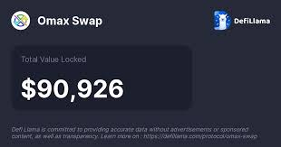

Understanding Swap DefiLlama: A Comprehensive Introduction (Or, My Accidental Dive into Decentralized Swamp Things)
Okay, let's be honest. The world of Swap DefiLlama – decentralized finance – sounds like something cooked up in a cyberpunk basement by a caffeine-addicted coder. And for a while, I thought it was. I mean, "yield farming"? Sounds like something my grandma would warn me against. But then, my friend, let's call him "Crypto Chad" (because that's basically his online persona), started dropping terms like "DefiLlama" and "swap aggregators," and I knew I had to understand, at least enough to avoid becoming the butt of his next crypto-bro joke.
So, what's DefiLlama? Think of it like Kayak or Expedia, but for your decentralized finance adventures. Instead of comparing flight prices, it's comparing swap rates across different decentralized exchanges (DEXs) like Uniswap, SushiSwap, and Curve. You know, those places where you can swap one cryptocurrency for another, without needing a stuffy old bank in the middle. Seems simple enough, right?
.jpeg)
Well, it is... and it isn't. The beauty of DefiLlama is its aggregation. It saves you the tedious task of individually checking each DEX for the best price. Imagine trying to find the cheapest flight by manually checking every airline's website – exhausting, right? That's basically what DefiLlama solves for the DeFi world. It's a time-saver, a potential money-saver (depending on your swap strategy, of course – let's not get carried away here!), and honestly, a pretty slick piece of software.
However, there’s a slight learning curve. I’ll admit, my first encounter felt like trying to decipher ancient hieroglyphics. All those numbers, charts, and acronyms… I almost went back to watching cat videos. But once you grasp the basics – understanding what APR (Annual Percentage Rate) and TVL (Total Value Locked) represent, for example – the dashboard starts to make sense. It’s like learning a new language, honestly. Initially frustrating, but ultimately rewarding.
One thing I particularly appreciate about DefiLlama is its transparency. You can see the trading volume, the fees, and the liquidity of each DEX. This is crucial, because unlike traditional finance, the DeFi world can be a bit of a Wild West. Understanding these metrics helps mitigate the risk – though, let's face it, risk is inherent in the crypto game. I'm still slightly terrified, to be honest. But educated fear is better than blind faith, right?
Now, I'm not going to pretend I'm a DeFi guru after this little foray. I’m still figuring things out myself. My "Crypto Chad" friend still has a slight edge on me. However, I have learned the value of comparing rates before making a swap – a lesson that applies far beyond the crypto world, if you think about it. Should I buy that overpriced avocado toast? DefiLlama's logic helps me here, too – comparing prices is key.
In the end, this journey into DefiLlama wasn't just about understanding a website; it was about understanding a whole new financial landscape. It's complex, yes, but also incredibly fascinating. It’s a testament to the power of decentralization and the potential it holds for the future of finance. And even if I occasionally feel slightly lost in the jargon, the sense of empowerment, the knowledge that I can navigate this space – even a little – makes it all worthwhile. So, go forth and explore – just maybe don't invest your life savings just yet. Baby steps, people, baby steps.
DeFiLlama's Swap: My Accidental Dive into the Crypto Ocean (and Why You Should Care)
Okay, so picture this: I'm scrolling through Twitter – a typical Sunday afternoon wasted in the glorious rabbit hole of internet distraction – and suddenly, this word pops up everywhere: "DeFiLlama." I'm not exactly a crypto guru, more of a curious bystander, but the sheer ubiquity of the term piqued my interest. What is DeFiLlama anyway? Some kind of llama-themed DeFi project? (I was secretly hoping.)
Turns out, it's way more interesting – and less fluffy. DeFiLlama is essentially a comprehensive aggregator for decentralized finance (DeFi) data. Think of it as the Yelp of the crypto world, but instead of reviewing restaurants, it tracks everything happening in the sprawling, often confusing, universe of decentralized applications.
And its "Swap" feature? That's what truly caught my attention. DeFiLlama's Swap allows you to compare different decentralized exchanges (DEXs) – think Uniswap, PancakeSwap, Curve – in terms of fees, liquidity, and the best possible rate for your particular trade. It's like having a personal, highly informed concierge for your crypto swaps.
Now, I'll be honest, my initial foray into DeFiLlama's Swap was a bit… tentative. I felt like that kid in the pool, toe-dipping before plunging into the (potentially freezing) water. The sheer number of DEXs and the complexities of the underlying protocols can be overwhelming. It's a lot to process. It took me a while to even grasp how exactly the algorithm figures out the "best" rate. Aren't these platforms all, you know, independently run? How can it compare them apples-to-apples?
The answer, as far as I understand it, is a sophisticated combination of constantly updating data feeds from each DEX. It essentially crawls the blockchain, pulling information on liquidity pools, trading volumes, and current prices. Then, using its own set of algorithms (which, admittedly, I don’t fully comprehend), it presents a simplified interface, allowing you to quickly compare the potential cost of your trade across platforms. It's a bit of magic, really. Or maybe just really good engineering.
But here's the thing: I found the comparison feature incredibly helpful, even for a crypto noob like myself. The clarity and simplicity it offered were invaluable. It removed the guesswork and the tedious task of manually checking multiple DEXs. I started appreciating the subtle differences – some DEXs might offer slightly lower fees but have less liquidity, leading to slippage (the difference between the expected price and the actual price of a trade). It’s like learning to appreciate the nuances of wine tasting, but with crypto.
My initial hesitancy gave way to a sense of empowerment. I felt more in control, more informed. I wasn’t just blindly throwing my money into the crypto wilderness; I was making educated decisions, based on data that was readily available and easy to understand (thanks, DeFiLlama!).
So, this isn't a "how-to" guide on using DeFiLlama's Swap – there are plenty of those online. This is more of a reflection on the human experience of exploring a complex, technological landscape, the feeling of learning something new, and the unexpected joy of finding a tool that actually simplifies a complicated process. The journey, from initial apprehension to newfound confidence, was as interesting as the destination. And maybe, just maybe, I'll finally understand how those llamas fit into the picture sometime.
DeFiLlama's Swap: From Spreadsheet Chaos to Global Dashboard – My Accidental Journey
Remember that time you tried to organize your sock drawer? It started innocently enough, a simple desire for order. Then, suddenly, you were knee-deep in mismatched pairs, wrestling with colour-coded systems that ultimately crumbled under the weight of… well, socks. Building DeFiLlama’s Swap feature felt a bit like that. Except instead of socks, we were dealing with terabytes of decentralized exchange (DEX) data, and instead of a drawer, the entire chaotic universe of DeFi.
It all started, as many great (and some terrible) things do, with a spreadsheet. Honestly, a truly awful spreadsheet. It was 2021, the DeFi summer was in full swing, and I, along with a small, ragtag team, was trying to make sense of the exploding landscape of DEXs. Information was scattered, opaque, and frankly, a nightmare to track. Each platform had its own interface, its own quirks, its own… let's just say "charming" inconsistencies. We were drowning in data, and desperately needed a life raft.
That spreadsheet was our first attempt at building that raft. It was clunky, unwieldy, prone to errors, but it worked, in its own chaotic way. Slowly, painfully, it started to reveal patterns, trends. We could see which DEXs were thriving, which were struggling, and more importantly, why. We started to understand the nuances of the different protocols, their strengths and weaknesses, the subtle dance between liquidity, fees, and user experience. It was fascinating, exhausting, and slightly maddening all at once.
The transition from that spreadsheet to the Swap feature on DeFiLlama wasn’t a clean, linear progression. Oh no, it was more of a frantic scramble up a slippery slope, punctuated by moments of brilliant insight and near-catastrophic failure. There were late nights fuelled by copious amounts of coffee (and maybe a questionable amount of pizza), debugging sessions that felt like staring into the abyss, and those exhilarating "aha!" moments that made it all worthwhile.
One particularly memorable moment involved a particularly stubborn API that refused to cooperate. I swear I spent a solid day wrestling with it, only to discover that the issue was a single, misplaced semicolon. The frustration was immense, but the lesson learned was invaluable: attention to detail is paramount when dealing with something as complex as DeFi data.
But the real magic, I think, came from the community. DeFiLlama wasn't built in a vacuum. It was a collaborative effort, a testament to the collaborative spirit of the DeFi ecosystem itself. We received countless contributions, bug reports, and suggestions, all of which helped shape the Swap feature into what it is today. It wasn't just a data aggregator; it was a community project.
Looking back, I'm struck not just by how far we've come, but also by how far we still have to go. The DeFi space is constantly evolving, and so too must DeFiLlama. The journey, from a chaotic spreadsheet to the relatively streamlined dashboard we have now, has been a wild ride. And it's a testament to the fact that even the most complex systems can be tamed, one line of code, one user suggestion, one carefully organized sock at a time. Perhaps I should write an article about that next.
DeFillama's Swap: More Than Just Numbers on a Screen
Remember that time I tried to bake a cake using only the recipe title? "Chocolate Decadence" sounded amazing, but without the actual steps, I ended up with a… well, let's just say it wasn't exactly edible. That’s kind of how I felt approaching DeFiLlama’s Swap section initially. The sheer volume of data – all those protocols, their respective TVLs (Total Value Locked), trading volumes – it was overwhelming. But then, slowly, I started to understand the delicious recipe behind it all.
DeFiLlama, for the uninitiated, is basically the go-to place for tracking the pulse of the decentralized finance world. Think of it as the ultimate financial dashboard for crypto, encompassing everything from lending protocols to yield farming aggregators. And nestled within this vast landscape is their Swap section – a powerful tool focusing specifically on decentralized exchanges (DEXs). But what makes it truly stand out?
First off, the sheer breadth of coverage is mind-blowing. It’s not just about the big players like Uniswap and Curve. DeFiLlama digs deep, bringing to light smaller, more niche DEXs – the hidden gems, if you will. This comprehensive view allows you to truly appreciate the diversity of the DeFi ecosystem. It’s like discovering a hidden speakeasy tucked away in a bustling city. You wouldn’t find it on a regular tourist map, but it's there, thriving.
Then there's the visual clarity. I'm a visual learner, so the charts and graphs are a lifesaver. They’re not just pretty; they’re functional, displaying key metrics like 24-hour volume, fees earned, and liquidity pools. It’s easy to compare different DEXs side-by-side, something that would be a logistical nightmare using disparate sources. This is where the "recipe" really shines. It doesn’t just tell you the ingredients; it shows you how they interact and contribute to the final product.
However, let’s be real for a second. Navigating the data can still feel a bit like deciphering ancient runes sometimes. The sheer number of DEXs can be daunting, especially for newcomers. I've definitely gotten lost a few times, scrolling endlessly through lists, wondering if I missed a hidden treasure. Maybe a better filtering system, or more intuitive search functions, could further improve the user experience.
But even with its minor quirks, the Swap section's real strength lies in its power to inform. It empowers you – the user – to make informed decisions. Are you curious about the popularity of a specific DEX? DeFiLlama's got you covered. Worried about slippage? The data provides context. Planning to stake your tokens in a liquidity pool? DeFiLlama allows you to evaluate your risk in a more data-driven way.
In the end, my journey with DeFiLlama’s Swap section mirrors my (ultimately successful) attempt to make that chocolate cake. It started with a sense of being overwhelmed by the sheer scope, followed by a gradual appreciation of the intricate details and functionality, and finally, a satisfaction that comes from understanding a complex process. It’s not perfect, but it’s incredibly useful and, more importantly, it’s a testament to how data visualization can illuminate even the most opaque corner of the decentralized finance world. So yeah, maybe next time I'll try baking that cake again. And definitely, I'll use DeFiLlama to research my next DeFi investment.
Lost in the DeFi Jungle: Navigating Swap Aggregators – Is DefiLlama the King?
Remember that time I tried to find the cheapest flight to Bali? It felt like navigating a labyrinth of pop-up ads, hidden fees, and slightly shady-looking websites. That, my friends, is exactly how I felt when I first started exploring the world of DeFi swap aggregators. Suddenly, I was facing a jungle of platforms, each promising the best rates, the fastest transactions, the… you get the picture. It was overwhelming. So, I did what any self-respecting, slightly overwhelmed millennial would do: I dove in headfirst, focusing on DefiLlama, and then comparing it to the others.
DefiLlama, for those unfamiliar, is a pretty popular aggregator, showing you the best swaps across various decentralized exchanges (DEXs). It's slick, it’s easy to use, and – let’s be honest – the interface is a breath of fresh air compared to some of the other options out there. It’s like the well-organized, aesthetically pleasing cousin of the rest of the DeFi ecosystem.
But is it the best? That's the million-dollar question, and honestly, I'm not entirely sure Swap DefiLlama have a definitive answer. This isn't a simple "A vs B" comparison; it's more like comparing apples, oranges, and those weird, spiky rambutans you find at the Asian market – each with its own unique quirks.
Take 1inch, for example. It’s a veteran in the space, and it generally offers competitive rates. But sometimes, I feel like it throws a lot of information at you; it can be a bit overwhelming, especially for newcomers. It's like trying to read a dense academic paper after a long day – the information is there, but it takes extra effort to fully digest.
Then there's Matcha. It boasts a user-friendly interface and often offers good rates, but my experience hasn't been consistently stellar. Sometimes, the fees seem a bit higher than I expected. Maybe it's just me being overly sensitive to transaction costs, but hey, even a small difference can add up over time, right? It's a bit like ordering a pizza: you think you're getting a great deal, but then hidden delivery fees make you question your life choices.
And let's not forget Paraswap. I found Paraswap to be surprisingly good at finding obscure liquidity pools that others missed. It’s like that friend who always knows about the secret, underground concert venues. But it can be a bit less visually appealing than DefiLlama. It's efficient, sure, but it lacks that "wow" factor.
So, back to DefiLlama. I’ve found it consistently reliable for finding decent rates and has a clear, almost minimalist design that I appreciate. It’s the reliable friend you can always count on, not the flashy, attention-grabbing one. But it doesn't always provide the absolute best rate, which is a small but important caveat. Sometimes, I've found slightly better deals on other aggregators, even after painstakingly comparing them. It’s a frustrating reminder that the seemingly perfect solution is rarely actually perfect.
What I've learned throughout this whole journey is that there's no single "best" DeFi swap aggregator. Each has its strengths and weaknesses, and the best choice ultimately depends on your priorities: speed, lowest fees, user experience, or access to niche pools. My personal preference leans towards DefiLlama for its simplicity and reliability, but I'll continue to cross-check with other aggregators to ensure I'm always getting the best possible deal. This, my friends, is the beautiful (and sometimes frustrating) reality of navigating the decentralized finance world – a wild west of opportunities and complexities.
The journey wasn't just about finding the best aggregator; it was about learning the intricacies of DeFi, the value of price comparison, and the humbling realization that perfection is a myth, even in the digital world. And isn't that the beauty of it all? A constant learning experience, a wild exploration of the ever-changing landscape of decentralized finance, one swap at a time.
Decoding DeFiLlama: How They Track Billions in a Decentralized Wild West
Remember that time I tried to bake a cake using only ingredients sourced from three different farmer's markets, each with wildly different measurement systems? Total chaos. That's kind of how I felt when I first started trying to wrap my head around how DeFiLlama aggregates liquidity across all these different blockchains. It's a massive, multi-faceted puzzle, and frankly, it’s mind-boggling how they pull it off.
DeFiLlama, for the uninitiated, is this incredible website that gives you a near real-time snapshot of the total value locked (TVL) in Decentralized Finance (DeFi) protocols. It’s a crucial resource for anyone even remotely involved in the crypto space. But how does it actually do it? How does it track all those billions of dollars spread across Ethereum, Binance Smart Chain, Avalanche, Polygon, and a dozen other networks, each with its own unique quirks and complexities? It's not like there's some central database they can just tap into.
Well, the short answer is: it’s insanely clever and probably involves a lot of caffeine. The longer answer? It's a multi-pronged approach, a sophisticated blend of technology and… well, let's call it DeFi magic.
First off, they rely heavily on APIs. Think of APIs as polite little messengers that fetch data from various DeFi protocols. Each protocol – Uniswap, Aave, Curve, etc. – exposes its data through these APIs, providing key information like liquidity pool sizes and token prices. But here’s where things get tricky. Each protocol uses different formats, different data structures. It’s like trying to decipher hieroglyphics written in three different languages, all while your coffee is getting cold.
DeFiLlama’s engineers, therefore, have to write custom code to interact with each API, translating the various data formats into something they can understand and consolidate. Imagine the sheer volume of code they need to maintain! It's a constant battle against evolving protocols, API updates, and the ever-present risk of a bug causing a major discrepancy in the numbers. Honestly, I'd be perpetually stressed out.
Then there’s the issue of price aggregation. The price of a token can vary significantly across exchanges. To get an accurate TVL, DeFiLlama has to account for these price discrepancies. This often involves pulling price data from multiple centralized and decentralized exchanges, weighting the data, and then applying complex algorithms to find a "fair" price. It's not an exact science, mind you; there will always be some degree of uncertainty. But they strive for accuracy, and that's something to respect.
Finally, there’s the sheer scale of the task. DeFi is constantly evolving. New protocols emerge, old ones get upgraded, and existing ones are constantly changing. DeFiLlama needs to stay on top of all these changes, constantly adapting its code and updating its infrastructure. It’s like trying to map a constantly shifting landscape.
So, yeah, it's way more complex than I initially thought. My cake analogy was actually pretty weak. It's less about baking a cake and more about building a constantly updating, highly accurate, globally distributed, real-time financial system. This isn't just impressive; it's practically heroic.
What started as a quest to understand how DeFiLlama works has turned into a profound appreciation for the technical prowess and sheer dedication required to maintain such a crucial resource for the DeFi community. It’s a messy, ever-changing landscape, and yet, they make it seem…almost easy. That's perhaps the greatest magic of all.
The Wild West of DeFi and the Clock That Keeps Ticking: Real-Time Data in DefiLlama
Remember that time I tried to bake a cake using only vague, outdated instructions from a 1950s cookbook? Let’s just say it wasn't pretty. The frosting collapsed, the cake was rock hard, and I ended up with a culinary disaster that vaguely resembled a geological formation. That’s kind of how I felt about navigating the DeFi space before I truly grasped the significance of real-time data—particularly on platforms like DefiLlama.
Defi, for the uninitiated, is a wild, wild west. It's exciting, innovative, and utterly chaotic. You've got decentralized exchanges (DEXs) popping up like mushrooms after a rain, each with its own quirks, fees, and… let’s be honest, occasionally dubious practices. Trying to make sense of it all without constantly updated information is like trying to navigate a blizzard blindfolded.
That's where DefiLlama steps in, acting as something of a Sherpa guiding you through this cryptographic Everest. And the key to its effectiveness? Real-time data. Now, you might be thinking, "Real-time data? Big deal. My weather app gives me real-time data." True, but the stakes are considerably higher here. We're not talking about whether or not to pack an umbrella; we're talking about potentially significant financial decisions.
Think about it: liquidity pools shift constantly. Trading volumes fluctuate like a rollercoaster on caffeine. Interest rates dance a jig to the tune of market forces. Without that constantly updating information, you’re essentially flying blind, making critical decisions based on potentially stale, and therefore dangerously inaccurate, information. It's like trying to trade stocks using yesterday's closing prices—recipe for disaster, right?
DefiLlama, however, provides that crucial up-to-the-minute insight. It aggregates data from various DEXs, showing you everything from total value locked (TVL) to individual token prices, giving you a much-needed panoramic view of the DeFi landscape. This is particularly crucial when you're evaluating the health and stability of a protocol. Is that liquidity pool healthy? Is the TVL growing or shrinking? Are there any red flags I should be aware of? DefiLlama helps answer these questions.
But let’s be real: even with DefiLlama’s real-time data, DeFi remains risky. It's not a foolproof system; there are still inherent risks involved. I’ve seen seemingly promising projects collapse overnight. The information is a tool, not a guarantee. It helps you make informed decisions, but it doesn't eliminate the inherent volatility and uncertainty of the space. It’s still a high-wire act, just one with a slightly less wobbly net thanks to real-time data.
So, where does this leave us? Well, my initial baking analogy still holds some merit. Even with the best recipe (DefiLlama's real-time data), a bit of experience, caution, and a healthy dose of skepticism is still needed to avoid a complete DeFi disaster. The journey from clueless baker to confident DeFi navigator is a long one, but tools like DefiLlama significantly improve the odds of baking a successful cake – or at least, avoiding a complete culinary catastrophe. And isn’t that what we all crave in this sometimes chaotic, but ultimately thrilling, world of decentralized finance?
The Great DeFi Llama Token Tango: A Compatibility Conundrum
So, picture this: you’re finally ready to dive into the wild world of DeFi. You've got your shiny new crypto wallet, a healthy dose of (slightly reckless) optimism, and a burning desire to swap some Shiba Inu for… well, something else. Maybe some tasty CAKE? The problem? Finding a DEX that actually lets you swap those particular tokens feels like trying to solve a Rubik's Cube blindfolded while riding a unicycle. That's where DefiLlama's token compatibility, or lack thereof, comes into play.
DefiLlama, for the uninitiated, is basically the Yelp of decentralized finance. It’s a treasure trove of data, allowing us to compare different decentralized exchanges (DEXs), see their TVL (Total Value Locked), and generally get a feel for the DeFi landscape. But something I've found myself wrestling with lately is the frustrating inconsistency in token compatibility across these platforms. It’s like trying to find a universal remote that works with every device in your entertainment center – a near-impossible feat.
One minute, you're happily swapping ETH on Uniswap, the next you're staring blankly at a DEX that doesn't recognize your perfectly legitimate, albeit obscure, meme coin. And then there's the question of slippage. Sometimes the slippage is so high it feels like you're paying a ransom, not a transaction fee. I mean, is this the price we pay for decentralized freedom? A slightly chaotic Wild West where only the technically savvy survive?
I confess, part of me loves this chaos. It's a testament to the still-evolving nature of DeFi, a reminder that we're building something truly revolutionary here. But another part of me – the part that just wants to swap tokens without pulling out my hair – craves more standardization. Wouldn't it be amazing if DefiLlama could filter DEXs based not only on TVL but also on supported tokens? Imagine a simple search function where you could type in "SHIB to CAKE" and get a list of all the exchanges capable of handling that specific swap, sorted by fees or liquidity. It'd be a game-changer.
Then again, maybe I'm asking for too much. Perhaps the beauty of DeFi lies in its fragmentation, its rebellious spirit. Perhaps imposing too much uniformity would stifle innovation, squash the little guys, and create a bland, homogenized DeFi landscape that would frankly bore the pants off me. (And who needs that?)
The journey of trying to understand token compatibility on DefiLlama has been... a journey. A bit frustrating, yes, but also strangely illuminating. It’s forced me to think deeper about the underlying technology, the trade-offs between decentralization and usability, and the sheer complexity of this nascent ecosystem.
So, where does this leave us? Well, I don't have all the answers. I'm still figuring this stuff out, alongside everyone else. But I've learned that DefiLlama is a powerful tool, even with its imperfections. And understanding its limitations – especially regarding token compatibility – is crucial for navigating the sometimes bumpy road of DeFi. The quest for the perfect, universally compatible DEX may be a fool’s errand, but the journey itself is certainly educational. And hey, maybe along the way, I'll finally manage that SHIB to CAKE swap. Fingers crossed!
DefiLlama's Transparency: A Peek Behind the Curtain (and Why I'm Still Slightly Skeptical)
Okay, picture this: you're about to hand over your hard-earned crypto to some shadowy DeFi platform. Sounds thrilling, right? Not really. My stomach usually does a little flip-flop at the thought, kind of like that feeling you get before a blind date – a mix of excitement and terrifying uncertainty. This is where DefiLlama’s claim of unparalleled transparency and security comes in. But is it really all it’s cracked up to be?
I've been a DeFi nerd (a proud DeFi nerd, I might add) for a while now, and trust me, navigating this wild west of decentralized finance is like trying to find a decent avocado toast in a city overflowing with mediocre brunch spots. You're constantly sifting through information, trying to discern the good from the… well, the downright dangerous. DefiLlama aims to be the Yelp of DeFi, providing aggregated data to help us make informed decisions. And they’ve done a pretty impressive job so far.
The sheer volume of information they present is staggering. It's like opening a massive spreadsheet that reveals the inner workings of countless protocols. You can see TVL (Total Value Locked), token distributions, APYs… it’s a data junkie’s dream. And the fact that they're open-source? That's a huge step towards transparency. It means anyone can scrutinize their code, which is basically like having a thousand pairs of watchful eyes (hopefully including some very clever audit firms) keeping things in check.
But here’s where my inner skeptic rears its head. While I applaud the ambition and appreciate the readily available data, can we really trust a single source, no matter how transparent it claims to be? What happens if they get hacked? Or, even more subtly, what if there are biases built into the algorithms that we simply can't see? It’s like trusting Wikipedia completely – mostly reliable, but always room for a sneaky edit.
I’m not saying DefiLlama is nefarious. Far from it. They've arguably done more than most to bring a measure of clarity to a notoriously opaque space. I just think it’s important to maintain a healthy dose of skepticism, especially in the world of crypto. The promise of “transparency” is often a marketing ploy, and even with the best intentions, things can still go wrong. Remember the FTX debacle? Nobody saw that coming, even with all the (supposed) transparency.
So, where does that leave us? At a point where I appreciate DefiLlama’s efforts immensely but still advocate for a multi-faceted approach to due diligence. Don't rely solely on any single source, including DefiLlama, before investing your hard-earned tokens. Diversify your information, cross-check data, and always, always, do your own research. Because at the end of the day, your financial well-being in the DeFi space rests on your shoulders, not on any single website, no matter how shiny or transparent it appears.
This isn't a condemnation of DefiLlama, but rather a reflection on the inherent complexities of the DeFi landscape. My journey through this article has been one of acknowledging both the impressive strides made towards transparency and the ever-present need for critical thinking. It's a reminder that even in a world striving for openness, healthy skepticism remains the ultimate safeguard. It’s a messy, complicated world out there, and maybe that's why I find it so fascinating.
Lost in Cryptoland: How Swap on DefiLlama Saved My Sanity (and Maybe My Portfolio)
Remember that scene in "Back to the Future" where Marty's stuck in 1885, desperately trying to get back to 1985? That's kind of how I felt navigating the DeFi world – lost, confused, and increasingly convinced I’d accidentally time-traveled to a parallel universe where everyone spoke fluent blockchain. I had assets scattered across different chains – a little ETH here, some Solana there, a smattering of Polygon tokens… it felt like herding cats, only the cats were incredibly volatile and prone to sudden, inexplicable price drops.
Then, I stumbled upon Swap on DefiLlama. And let me tell you, it was like finding the flux capacitor in a dusty old barn.
At first, I was skeptical. Another DeFi aggregator? Seriously? The internet is already overflowing with them, all promising the moon (and often delivering… well, nothing). But desperation, like a persistent DeFi bug, gnawed at me. My scattered assets were starting to feel less like a diversified portfolio and more like a chaotic mess ripe for exploitation by… well, let's just say "less than savory characters."
DefiLlama, for those unfamiliar, is a pretty slick website that aggregates data from various DeFi protocols. It's like a Google Maps for decentralized finance, helping you visualize the vast, often bewildering, landscape. But the Swap functionality… that's the game changer.
Suddenly, trading between chains felt… manageable. I’m not going to lie, the initial process still felt a bit like performing open-heart surgery on a digital hamster, but the interface is surprisingly intuitive once you get the hang of it. No more hunting down bridges, wrestling with confusing gas fees, or praying to the algorithm gods that my transaction wouldn’t get stuck in limbo.
Now, am I suggesting that Swap on DefiLlama is a magic bullet that eliminates all risk? Of course not. This isn’t some get-rich-quick scheme; crypto is still volatile, and smart contracts can (and do) occasionally go haywire. There are still fees to consider, slippage to account for, and the ever-present threat of rug pulls to worry about.
But what DefiLlama's Swap does offer is a significant improvement in user experience. It streamlines the process, making cross-chain swaps more accessible to the average user (even this average user, who still occasionally feels like they’re stumbling through a dark, crypto-infested forest).
This whole journey writing this article has been a bit of a reflection, actually. It started with a frustrated cry for help – "Is there an easier way?!" And ended up being a surprisingly positive experience, even if I'm still learning the ropes. I'm not saying I'm suddenly a DeFi expert – far from it! But I am saying that tools like Swap on DefiLlama are making the entire ecosystem more accessible, less intimidating, and dare I say, even... fun?
Okay, maybe "fun" is a strong word. Let's stick with "less terrifying." The point is, even a crypto newbie like myself can navigate the cross-chain world with a little help. And in a world where understanding blockchain often feels like deciphering ancient hieroglyphics, that's a pretty big deal. So, if you’re feeling as lost as I was, give DefiLlama's Swap a try. You might just find your own flux capacitor. Or at least a slightly less chaotic crypto portfolio.
DefiLlama's Swap Feature: Is it for YOU? (Spoiler: Maybe not the way you think.)
Okay, confession time. I used to think DefiLlama was just that cool website that tracked all the DeFi protocols. Like, the ultimate scorecard for the crypto wild west. I’d check it daily, obsessively refreshing to see if my favorite protocol had magically doubled in TVL (Total Value Locked – because who doesn't love a good TVL increase, right?). But then, I stumbled upon their swap feature. And my perfectly organized, if slightly nerdy, DeFi world got… a little messy.
Now, before you think I’m about to launch into a breathless endorsement (or condemnation!), let’s back up. DefiLlama's swap feature aggregates liquidity from various decentralized exchanges (DEXs) to find you the best price. Sounds amazing, right? In theory, yeah. It's like having a super-powered, always-on price comparison website for your crypto trades. You put in your tokens, it finds the best rate across all the connected DEXs, and boom – instant, supposedly optimal trade.
But here’s where it gets interesting, and maybe a little less "boom" and a little more "hmm."
The initial appeal is undeniable. The sheer convenience! No more hopping between Uniswap, Curve, Balancer, and a dozen other DEXs, each with their own interface and quirks. DefiLlama simplifies the process, offering a one-stop shop. That's huge for someone who isn't comfortable navigating the intricacies of different DEX interfaces.
However, and this is a big however, I've found that its true value depends heavily on who you are as a DeFi user.
Are you a seasoned crypto pro with a deep understanding of slippage, gas fees, and the nuances of different automated market makers (AMMs)? Probably not. For you, the direct interaction with the individual DEXs might still offer more control and transparency. You might even find better deals by strategically choosing which DEX to use based on your specific token pair and market conditions. Think of it like this: would you use a meta-search engine for flights if you knew exactly which airlines offered the best deals and timing? Probably not.
On the other hand, are you someone who's new to DeFi, a little intimidated by the technical side of things, and just wants a simple, reliable way to swap tokens? Then, DefiLlama's swap feature could be a lifesaver. It removes a lot of the friction, allowing you to focus on the bigger picture – building your portfolio.

And then there’s the security aspect. Using a centralized aggregator like DefiLlama introduces a layer of trust. You’re essentially relying on their system to route your trades securely. Is that a risk? Possibly. It's a trade-off between convenience and direct control, and how much risk you're comfortable with will determine your choice.
My own experience is a bit mixed. I’ve had successful swaps, and I’ve also had moments where I felt like I could have gotten a slightly better price going directly to the source. It’s almost like picking between ordering a pizza on a delivery app versus walking to the pizza joint. Sometimes the convenience is worth the slight extra cost (or slippage, in crypto terms!), sometimes it isn't.
So, who should consider using DefiLlama’s swap feature? My conclusion, after this somewhat rambling journey of thoughts, isn’t a definitive yes or no. It’s more of a “it depends.” If simplicity and ease of use are your priorities, it's worth exploring. But if you're a seasoned DeFi warrior who prizes control and transparency, you might find yourself sticking to the individual DEXs. Ultimately, the best approach for Swap DefiLlama , as with most things in crypto, is to do your own research, understand the trade-offs, and choose the path that aligns best with your comfort level and trading style. And maybe, just maybe, keep refreshing that TVL page while you’re at it.
tags: DeFi, DeFiLlama, Decentralized Finance, Swaps, Crypto, Yield Farming, Liquidity Pools, Automated Market Makers (AMMs), Decentralized Exchanges (DEXs), Cryptocurrency